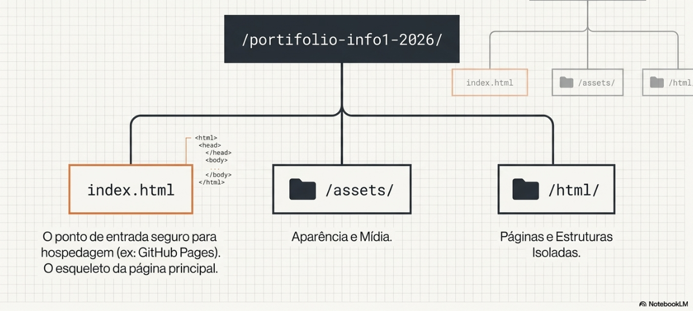
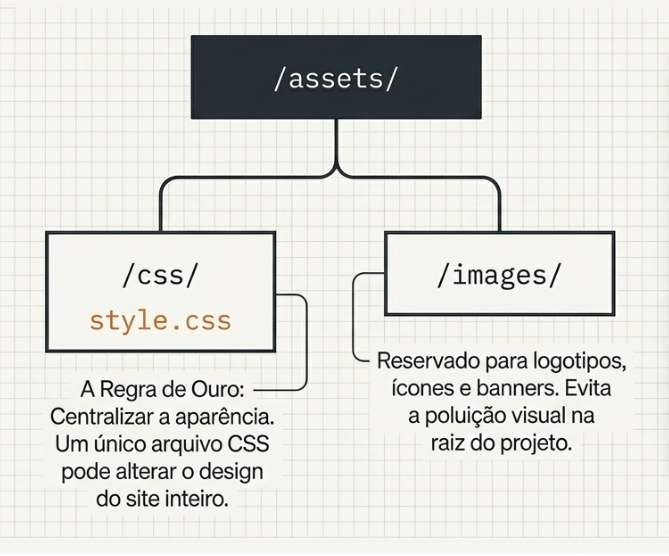
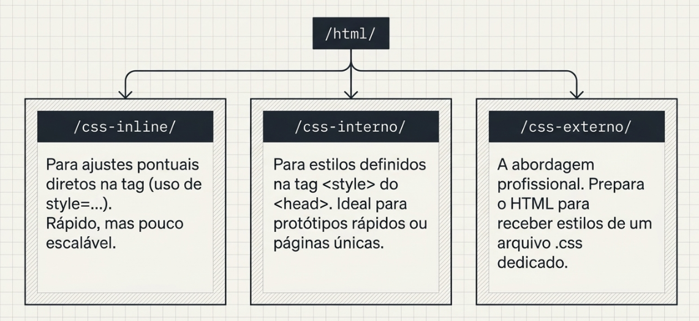
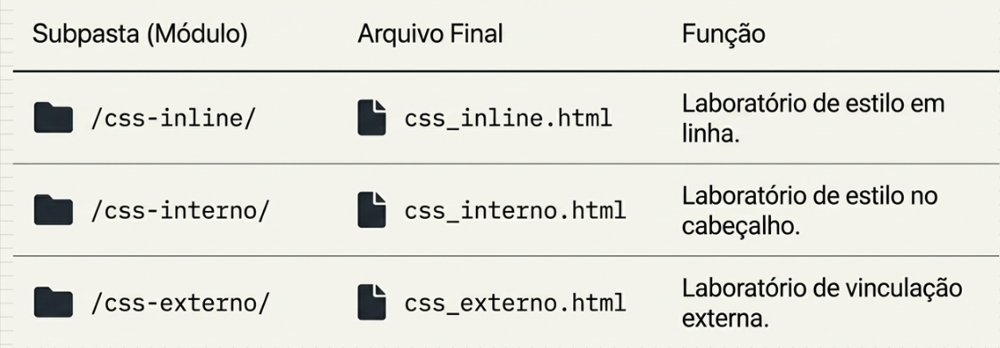

1. Separação entre Estrutura e Estilo

2. Conectando CSS ao HTML

3. Formar de incluir CSS ao HTML


4. Anatomia de uma Regra CSS

5. Tipos de Seletores

6. Peso das Regras

7. Arquitetura de Pastas e Arquivos

8. Caminhos Relativos no HTML

Tarefa - Meu Portfólio CSS
Objetivo: Aplicar os três métodos de inserção de CSS, garantindo ao mesmo tempo uma organização profissional de pastas e arquivos no seu repositório.
-
Tarefa 1 - Configuração do Ambiente
Criar o repositório portifolio-info1-2026 no GitHub e organizar a estrutura profissional de pastas (/assets, /css, /images).




-
Tarefa 2 - Estilo Inline
Aplicar cor azul e tamanho 24px diretamente na tag <h1> usando o atributo style no arquivo "css_inline.html" na pasta "css_inline".
- Tarefa 3 - Estilo Interno: Usar a tag <style> dentro do <head> para configurar a cor slategray e o tamanho 16px para o <body> do arquivo "css_interno.html" na pasta "css_interno".
- Tarefa 4 - Estilo Externo: Criar o arquivo styles.css, vinculá-lo via tag <link> e definir a fonte Arial 14px como padrão para paragrafo para o arquivo "css_interno.html" na pasta "css_externo".
- Tarefa 5 - Arquivo padrão: Criar o arquivo index.html com link para os três arquivos html criados na tarefa 2, 3 e 4.
- Tarefa 6 - Publicar Página no Github Pages e enviar o link do projeto publicado.
Processo
- Inicie a estrutura com a tag
<table>[11]. - Adicione uma legenda descritiva usando
<caption>[15]. - Crie o cabeçalho com
<thead>e utilize<th>com o atributoscope="col"para acessibilidade [18, 19]. - Preencha o corpo (
<tbody>) com os dados dos produtos usando<td>[6, 12]. - Utilize
<tfoot>para exibir o somatório do estoque [20].
Avaliação
| Critério | Iniciante | Excelente |
|---|---|---|
| Estrutura HTML | Tags básicas sem semântica. | Uso correto de table, tr, th, td [6]. |
| Acessibilidade | Sem legenda ou scope. | Inclui caption e scope nos cabeçalhos [15, 18]. |
| Semântica | Não usa thead/tbody. | Uso completo de tags estruturais [19, 20]. |
Conclusão
Parabéns! Você concluiu a jornada. Agora você compreende que tabelas não são apenas para "estética de layout", mas sim para estruturar dados de forma que humanos e máquinas possam interpretar corretamente [26-28].
Continue explorando como o CSS pode tornar essas estruturas ainda mais atrativas [29, 30]!